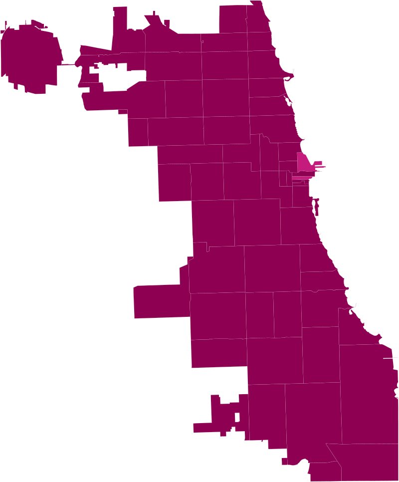
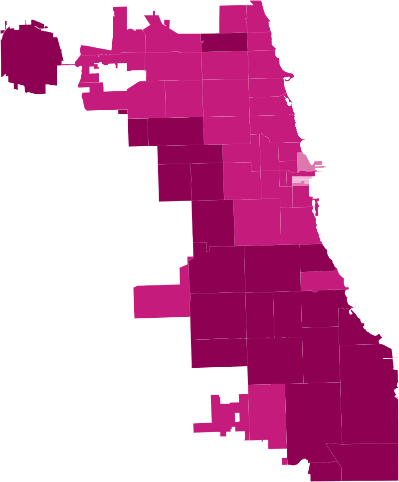
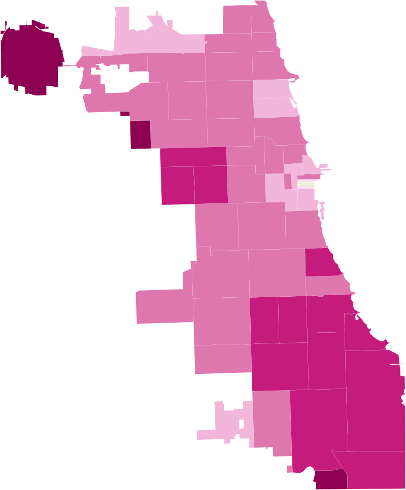
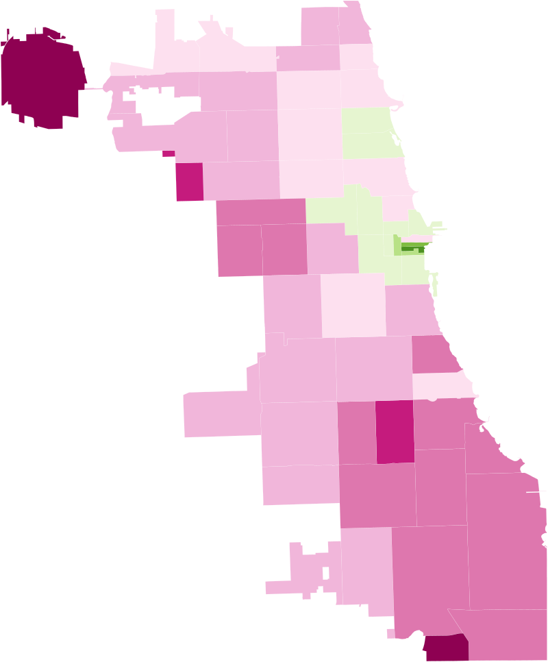
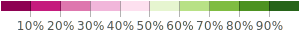

On January 25, Mayor Lightfoot and the Chicago Department of Public
Health (CDPH) announced an initiative called Protect Chicago Plus to
prioritize fifteen of the most vulnerable neighborhoods, mostly on the
South and West sides in Black and brown communities, for critical
COVID-19 vaccines.
That same day, South Side Weekly launched ChiVaxBot,
a daily Twitter bot highlighting the geographic disparities between who
was dying from COVID-19 and who was vaccinated. Even though the percent
of fully immune residents in several South and West Side ZIP codes rose,
the daily maps didn’t seem to change much.
After four months of reporting who’s dying from and who’s been vaccinated
for COVID-19, we’ve decided to update the bot to also illustrate change
over time. Starting TK, we will be threading a second daily tweet that
shows a GIF of the percent of fully vaccinated residents by ZIP code,
week by week.
Percent of residents with complete vaccine series, by ZIP code, in Chicago
February 25, 2021
March 25, 2021
April 25, 2021
May 25, 2021





The most important change will be that the GIF maps use the same key.
For example, one shade will always represent, say, 10 to 20 percent of
residents fully vaccinated, and another shade will always represent 20
to 30 percent of residents fully vaccinated, and so on. We hope that
this clarifies that vaccination rates are in fact improving, while
still keeping an eye on the disparities between the South and West
Sides and the rest of the city.